조경산업기사 (2016-05-08 기출문제)
1과목: 조경계획 및 설계
1. 중세서 양의 도시광장이라고 불리 던 것의 명칭은?
- 플레이스(place)
- 아고라(agora)
- 포름(foruΠ1)
- 프라자(plaza)
(정답률: 71%)

2. 중국 원대(元代)의 예찬(倪瓚)과 화가 주덕윤(朱德潤)에 의해 설계된 정원은?
- 졸정원
- 사자림
- 수지 정 원
- 대자사(大字寺)의 정 원
(정답률: 66%)
3. 다음 중 계리궁 정원과 가장 관계가 먼 것은?
- 연양정
- 천교립
- 송금정
- 백낙천
(정답률: 52%)
4. 다음 중 경복궁의 어원(御苑)과 관계없는 것은?
- 부용정
- 경회루
- 아미산후원
- 향원정
(정답률: 40%)
5. 다음 중 인위적으로 흙을 쌓아서 만든 계단식 후원은?
- 덕수궁의 함녕 전 후원
- 경복궁의 교태전 후원
- 창덕궁 낙선재의 후원
- 창덕궁 연경당 선향제 후원
(정답률: 78%)
6. 백제 동성왕(東城王)이 서기 500년에 궁안에 누(樓)를 짓고 원지(苑池)를 파고 기이한 짐승을 기른 기록이 있는데, 이때의 누의 명칭은?
- 망해루(望海樓)
- 임해전(臨海殿)
- 임류각(臨流閣)
- 세연정(洗然亭)
(정답률: 76%)
7. 고려 예종 때 창건된 국립 숙박시설로 왕의 행차에 대비한 별원이 있던 곳은?
- 순천관
- 중미정
- 만춘정
- 혜음원
(정답률: 59%)
8. 낙양명원기(洛陽名 園言己)에 관한 설명으로 옳지 않은 것은?
- 작자는 북송(北宋)의 이 격 비로 알려져 있다.
- 당나라의 원림에 관한 것도 기술하고 있다.
- 석가산 조영수법에 대해 자세히 설명 되어있다.
- 아취(雅趣)를 중히 여기는 사대부의 정원들이 소개되었다.
(정답률: 34%)
9. 다음[보기]는 계획·설계과정 중 어느 단계에 해당하는가?
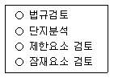
- 용역발주
- 조사
- 분석
- 종합
(정답률: 75%)
10. 사람들이 공간을 어떻게 인지하는가라는 문제를 분석하기 위해 린치(Kevin Lynch)가 사람들이 그린 지도를 통해 분류한 공간인지방법에 해당하지 않는 것은?
- 우선 결정 점부터 그리는 방법
- 경계선을 그리고 세부적인 것을 보는 방법
- 상징물을 지정하고 상징물 사이를 연결하여 구역으로 나누는 방법
- 통로를 그리고 그통로를 따라 주변요소들을 지적 하는 방법
(정답률: 56%)
11. 옥외휴양 행동을 좌우하는 지배인자로서 영향력이 가장 약한 기상 조사 항목은?
- 강우 일수
- 연평균 강설량
- 기온의 변동량(최고 최저 기온)
- 생물 기후의 각종 데이터(벚꽃의 개화일 등)
(정답률: 70%)
12. 경관을 디자인 하는데 있어서 개념을 형태로 발전시키는 주제로서 크게 기하학적 인 형태의 주제와 자연적인 형태의 주제로 나늘 수 있는데 다음 중 자연적인 형태인 것은?
- 원위의원
- 90° 직각 주제
- 불규칙한 다각형
- 동심원과 반지름
(정답률: 82%)
13. 다음 중 환경영향평가법 시행령에 규정된 환경 분야별 환경영향평가 세부항목과 항목수가 맞지 않는 것은?
- 대기환경 분야(3가지) : 소음·진동, 일조장해, 위생·공중보건
- 수환경 분야(3가지) : 수질(지표·지하), 수리 : 수문, 해양환경
- 토지환경 분야(3가지) : 토치이용, 토양, 지형· 지질
- 자연생 태환경 분야(2가지) : 동·식 물상, 자연환경 자산
(정답률: 75%)
14. 다음 용도지역별 용적율의 최대한도가 다른 하나는?
- 녹지지역
- 농림지역
- 생산관리지역
- 자연환경보전지역
(정답률: 44%)
15. 다음 중 조경 설계기준상의 『문화재 및 사적지』에 관한 설명으로 틀린 것은?
- 사적지는 자연지형의 변화 및 훼손이 없는 범위 내에서 설계하며, 재료는 사적지 주변의 지역에서 활용되도록 고려 한다.
- 사적지는 사적의 복원 및 쟤현은 역사성에 맞게 하되 주변지역도 역사성 에 맞게 식재하고 시설물들이 조화롭게 설계되어야한다.
- 전적지는 관리자가 별도로 상주함으로 관리 측면을 관리자 중심의 설계를 기본으로 한다.
- 민속촌 내의 수목은 그 지방의 낙엽화목류와 과일나무를 주종으로 하는 향토수종을 사용하며 전통적 식재기법에 어긋나지 않도록 유의한다.
(정답률: 79%)
16. 『장애인·노인·임 산부 등의 편의증진보장에 관한법률 시행규칙』상의 장애인 등의 통행이 가능한접 근로의 기준 중 A에 해당하는 값은?
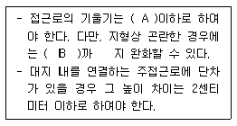
- 10분의 1
- 16분의 1
- 18분의 1
- 20분의 1
(정답률: 71%)
17. 다음 중 미적 원리에 대한 설명으로 틀린 것은?
- 균형은 안정성은 있지만 단조로움이 있다.
- 동세는 공간에 운동감을 줌으로 여백에 생명감을 준다.
- 율동의 효과적 사용은 작품에 약동감을 주며 여백을 충실히 표현하게 된다.
- 반복은 공간 예술에서 거리, 형태 등의 본질이며 그것은 동양식 정원에서 많이 볼 수 있다.
(정답률: 71%)
18. 그림은 어떤 건설 재료의 단면 표시 인가?
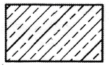
- 석재
- 강재
- 목재
- 콘크리트
(정답률: 72%)
19. 경사가 있는 지반에서 도면에 1 : 0.03 로 표시 할수 있는 경우는?
- 연직거리 1m 일 때 수평거리 8㎜ 경사
- 연직거리 4m 일 때 수평거리 12㎜ 경사
- 연직거리 1m 일 때 수평거리 80㎜ 경사
- 연직거리 4m 일 때 수평거리 120㎜ 경사
(정답률: 72%)
20. 그림과 같이 문자, 숫자, 상징 등이 비슷한것들끼리 그룹 지어 보이는 지각 원리는?
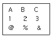
- 근접성의 원리
- 유사성의 원리
- 연속성의 원리
- 공동운명의 원리
(정답률: 40%)
2과목: 조경식재
21. 자연풍경 식재의 기본 패턴에 속하지 않는 것은?
- 교호식재
- 랜덤식재
- 배경식재
- 부등변삼각형식재
(정답률: 66%)
22. 토양환경에 있어 표층토(표토, surface soil) 에 관한 설명으로 틀린 것은?
- 토양색은 암흑색을 띠고 있다.
- 낙엽, 낙지가 분해되어 부식질을 포함하고 있다.
- 표토의 토심은 토양의 생산성과 밀접한 관계가 있다.
- B층 이라고도 하며 깊은 토층이 수목의 생육에 바람직 하다.
(정답률: 67%)
23. 파종잔디 조성에 관한 설명으로 옳은 것은?
- 한지형 잔디는 9˛ 10월경 파종한다.
- 파종지는 깊이 10cm 이하로 부드럽게 간다.
- 파종 후 종자가 흙 속에 박히지 않도록 주의한다.
- 파종 직후에는 통풍과 곰팡이 발생을 억제하기 위해 피복하지 않는다.
(정답률: 59%)
24. 수수꽃다리(Syringa oblata var. dilatata Reher)의 설명으로 틀린 것은?
- 낙엽활엽 소교목 또는 관목이다.
- 생육환경은 산기슭 양지(석회암지대)이다.
- 열매는 삭과로 타원형이며 첨두이고 길이 9 ∼ 15mm로 9 ∼ 10월에 성숙한다.
- 꽃은 8월에 피고 지름 2cm로 연한 노란색이며, 원뿔모양꽃차례로 전년지 끝에 마주난다.
(정답률: 63%)
25. 다음 설명에 적합한 수종은?
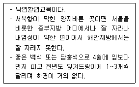
- 매실나무
- 리 기다소나무
- 이 태리포플러
- 삼나무
(정답률: 68%)
26. 다음 중 한해 동안 잎의 녹색을 가장 오랫동안 볼 수 있는 것은?
- 능수버들
- 회화나무
- 느티나무
- 은행나무
(정답률: 62%)
27. 식재로 얻을 수 있는 기능에는 건축적 이용, 공학적 이용, 기상학적 이용, 미적 이용이 있다. 다음 중 식재기능과 관계 없는 것은?
- 통행의 조절
- 점진적 이해
- 건축물의 구조재
- 섬세한 선형미
(정답률: 67%)
28. 고속도로 식재수법이 보행관련 식재, 사고방지 식재, 경관을 위한 식재, 기타 식재로 구분 될때 다음 중 “경관을 조성”하는데 목적이 있는식 재수법은?
- 시선유도식재
- 차광식재
- 진입 방지식재
- 조망식재
(정답률: 69%)
29. 다음 설명에 해당하는 수종은?
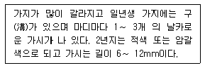
- 호랑가시나무
- 살구나무
- 노린재나무
- 매자나무
(정답률: 68%)
30. 다음 중 뿌리돌림과 관련된 설명으로 옳지 않은 것 은?
- 뿌리돌림의 대상은 수세회복이 필요한 노거수이다.
- 분의 크기는 뿌리 발생력이 강한 수종은 작게한다.
- 뿌리에 V자 모양의 깊은 홈이 파지도록 한 바퀴 빙돌아가며 파준다.
- 도랑파기식은 분형태로 도랑을 파 잔뿌리와 직근은 박피 후 남겨 새 뿌리를 발생시키고 굵은 측근은 모두 제거 한다.
(정답률: 61%)
31. 다음에서 설명하는 삽목법은?
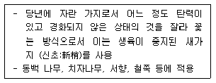
- 지삽(枝揷)
- 녹지삽(綠枝揷)
- 할삽(害揷)
- 엽삽(葉揷)
(정답률: 61%)
32. 다음 중 조경식재의 효과에 대한 설명으로 틀린 것은?
- 조밀한 방풍림은 풍속을 75 ∼ 85%까지 감소시킨다.
- 180m 정도의 넓은 식재대는 대기중의 먼지를 75%감소시킨다.
- 5 ∼ 10m 폭의 식쟤대는 저주파 소음을 10 ∼ 20dB까지 감소시킨다.
- 식재높이가 90 ∼ 180cm 가 되면 통행이 매우 효과적으로 조절된다.
(정답률: 54%)
33. 줄기가 회백색 계열이며, 밋밋하고, 큰 비늘처럼 벗겨지기 때문에 얼룩져 보이는 수종은?
- 백송(Pinus bumngeana)
- 분비나무(Abies nephrolepis)
- 서어나무(Carpinus laxilora)
- 식나무(Aucuba japonica)
(정답률: 64%)
34. 멸종위기 야생생물 I급에 해당하는 식물종은? 단, 야생생물 보호 및 관리에 관한 법률 시행규칙 을 적용한다.)
- 죽백란
- 가시연꽃
- 각시수련
- 노란만병 초
(정답률: 53%)
35. 가로수 식재시 차량주행에 따른 섬광 차폐를 위하여 식재간격을 결정하는 공식(S)은? (단, s : 가로수의 간격, d : 수관의 직경, r : 수관의 반경, α: 주행방향에 대한 시각)
- 2r/sinα
- 2d/sinα
- d/tanα
- 2d/tanα
(정답률: 60%)
36. 다음 식재와 관련된 설명 중 옳지 않은 것은?
- 식재로 얻을 수 있는 공학적 효과로서 섬광조절 기능이 있다.
- 일반적으로 음수는 양수에 비해 어릴 때 생장이 왕성하다.
- 식물은 토양수분이 pF 4.2에 도달되면 고사하며, 이점을 영구위조점이라 한다.
- 내염성이 크다고 알려진 수종이라도 내륙지방에서 자란 것은 해안지방에서 자란 것보다 내염성이 약하다.
(정답률: 71%)
37. 척박한 급경사지에 생육이 적합하며 지면을 피복하는 수목은?
- 싸리
- 주목
- 철쭉
- 병아리꽃나무
(정답률: 69%)
38. 한대성 수종으로 줄기가 백색으로 아름다운 수종은?
- Abies holophylla
- Betula schmidtii
- Alnus japonica
- Betula platyphylla var. japonica
(정답률: 59%)
39. 영명으로 tree of heaven이라고 불리며, 공해에 강하고 수관이 우산을 펴든 모양으로 열대 수목같은 모양의 잎을 가진 수종은?
- Wisteria floribunda
- Melia azedarach
- Ailanthus altissima
- Sophora japonica
(정답률: 48%)
40. 잔디는 지면의 피복식물로서 효과적이다. 잔디밭 조성에 있어서 우선적으로 고려되어야 할 사항은?
- 상토와 배수성
- 병충해 예방 및 관리
- 전질소량
- 대기오염
(정답률: 82%)
3과목: 조경시공
41. 다음 [보 기] 중 ( )안 에 알맞은 용어는?
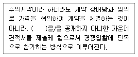
- 설계도면
- 공가시방서
- 공사예정가격
- 공사예정기일
(정답률: 73%)
42. 네트워크 공정표의 크리티컬 패스(critical path)에 대한 설명으로 맞지 않는 것은?
- 공기는 크리티컬 패스에 의해 결정 된다.
- 크리티컬 패스는 일의 개시 시점을 말한다.
- 크리티컬 패스상의 공종은 중점 관리 대상이된다.
- 여러 경로 중 가장 시간이 긴 경로를 말한다.
(정답률: 68%)
43. 다음에서 설명 하는 토공 기계는?
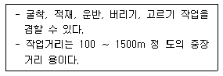
- 앵글도우저
- 그레이더
- 그래그라인
- 스크레이퍼
(정답률: 68%)
44. 자연상태에서 화강암의 정 원석 1m3 의 일반적인 추정 단위중량으로 가장 적당한 것은?
- 1800~2000kg
- 2600~2700kg
- 2700~3700kg
- 3500~4000kg
(정답률: 67%)
45. 강의 탄소함유량이 증가함에 따른 성질 변화에 관한 설명으로 옳지 않은 것은?
- 경도가 높아진다.
- 신장률은 떨어진다.
- 충격 값은 감소한다.
- 용접성이 좋아진다.
(정답률: 58%)
46. 인공위성을 이용한 범세계적 위치 결정의 체계로 정확한 위치를 알고 있는 위성에서 발사한 전파를 수신하여 관측점 까지의 소요시간을 측정함으로써 관측점 의 3차원 위치를 구하는 측량은?
- 원격탐측
- GPS측량
- 스타디아측량
- 전자파거리측량
(정답률: 81%)
47. 그림과 같은 단순보에 집 중하중이 작용할 때 최대굽힘 모멘트가 발생하는 구간은?
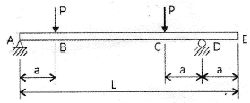
- 구간 AB
- 구간 BC
- 구간 CD
- 구간 DE
(정답률: 71%)
48. 다음의 정원석 석축공 품셈기준과 임부품을 참조하여 정원석 쌓기 10t, 놓기 20t에 대한 노임 합계는?
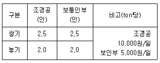
- 625,000원
- 825,000원
- 975,000원
- 1,250,000원
(정답률: 69%)
49. 자연상태에서 100m3의 흙을 8ton 트럭 1대로 옮기려고 한다. 몇 회 운반하면 되는가? (단 , 토량 변화율 (L) = 1.1 이고, 흐트러진 상태의 흙 단위중량은 1500 kg/m3이며,
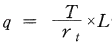
이다.)- 약 12회
- 약 13회
- 약 17회
- 약 21회
(정답률: 31%)
50. 옹벽의 구조설계시 역학적 필수 검토 사항으로만 조합된 것은?
- 모볜트, 미끄러짐, 처짐
- 처짐, 뒤틀림, 휨
- 지지력, 모멘트, 미끄러짐
- 재료의 내구성, 시공방법, 시공기한
(정답률: 73%)
51. 시멘트에 대한 일반적인 내용으로 옳지 않은 것은?
- 시멘트는 풍화되면 비중이 작아진다.
- 시멘트가 풍화되면 수화열이 감소된다.
- 시멘트의 분말도가 클수록 수화작용이 빠르다.
- 시멘트의 수화반응예서 경 화 이후의 과정을 응결이라 한다.
(정답률: 53%)
52. 시멘트의 분말도에 대한 설명으로 옳지 않은 것은?
- 분말도가 가는것 일수록 수화작용이 빠르다.
- 분말도가 가는것 일수록 조기강도는 떨어진다.
- 분말도가 가는것 일수록 워커빌리티가 좋다.
- 분말도가 지나치게 가는것 일수록 건조수축, 균열이 발생하기 쉽다.
(정답률: 53%)
53. 종자뿜어붙이기 시공과 관련된 설명 중 옳지 않은 것은?
- 네트 + 종자분사파종은 시공이 간편하여 단기간에 많은 면적을 녹화하는데 적합하다.
- 한 종류의 발생기대본수는 가급적 총 발생 기대본수의 80% 이하로 내려가지 않도록 한다.
- 사용식 생의 종자발아에 필요한 온도, 수분이 적당한 범위 내에서 정하되 가능한 한 봄철로 한 다.
- 초본류만을 사용하면 근계층이 얕기 때문에 비탈면이 박리 (剝離)되 기 쉬우므로 필요시 목본류와 혼파한다.
(정답률: 48%)
54. 그림과 같은 평행력 2t과 6t을 P1〓 3t, P2〓 5t으로 분해한다면 P2의 거리 X는?
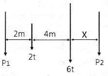
- 1m
- 2m
- 3m
- 4m
(정답률: 60%)
55. 금속부식을 최소화하기 위한 방법 에 대한 설명 중 옳지 않은 것은?
- 부분적으로 녹이 나면 즉시 제거 한다.
- 가능한 한 이종 금속을 인접 또는 접촉시키지 않는다.
- 큰 변형을 준 것은 가능한 한 담금질을 하여사용 한다.
- 표면을 평활하고 깨끗이 하며 가능한 한 건조상태를 유지 한다.
(정답률: 69%)
56. 벽돌쌓기에 관한 일반적인 설명으로 옳지 않은 것은?
- 균일한 높이로 쌓아 올라간다.
- 모르타르는 배합하여 1시간 이내에 사용한다.
- 벽돌에 충분한 습기가 있도록 사전에 조치한다.
- 하루에 쌓는 표준 높이는 2.0m까지이다.
(정답률: 70%)
57. 중용열 포틀랜드시 멘트의 일반적 인 특징 중 옳지 않은 것은?
- 초기강도가 크다.
- 건조수축이 적다.
- 수화발열 량이 적다.
- 내구성이 우수하다.
(정답률: 58%)
58. 감람석 이 변질된 것으로 암녹색 바탕에 아름다운 무늬를 갖고 있으나 풍화성이 있어 실내장식 용으로 사용되는 것은?
- 사문암
- 안산암
- 응회암
- 현무암
(정답률: 50%)
59. 목재는 같은 재료일지라도 탈습과 흡습에 따라 평형함수율이 달라지며 평형함수율은 탈습에 의한 경우보다 흡수애 의한 경우가 낮다. 이러한 현상을 무엇이라 하는가?
- 기건수축
- 동적평형
- 이력현상
- 목재의 이방성
(정답률: 53%)
60. 공사기간 중 설치되었다가 공사 완공 후 철거되는 것을 가시설이라 한다. 다음 중 가시설이 아닌 것은?
- 토류벽
- 옹벽주조물
- 비계
- 가설사무소
(정답률: 64%)
4과목: 조경관리
61. 다음 중 조경공간의 관수(灌水)관리를 위한 설명으로 가장 적합한 것은?
- 봄철 하루 중 관수의 시기는 식물의 생육이 왕성한 정오에 하는 것이 바람직하다.
- 스프링클러에서 물이 흐르는 파이프는 헤드의 원활한 작동을 위해 가능하면 큰 직경에 유속은 변화를 주어 빨리 공급되어야 한다.
- 관의 토양 중 깊이는 다른 관리 작업에 의해 파손되지 않도록 충분히 깊어야 하며, 겨울철 에는 물을 빼서 동파의 가능성을 줄여야 한다.
- 점적관수(drip irrigation)는 개별 식물체에 연결된 호스의 작은 구멍을 통해 소량의 물이 나오는 것으로서 많은 수분이 일시에 대기 중에 배출된다.
(정답률: 62%)
62. 다음 중 조팝나무진딧물과 관련된 설명으로 틀린 것은?
- 오래된 잎에 모여 식엽 가해한다.
- 가해 수종으로는 조팝나무, 모과나무, 명자나무 등이 있다.
- 무시생태 암컷 성충의 몸길이는 2mm내외이며 타원형으로 녹황색을 띤다.
- 생물적 방제를 위해 포식성 천적인 무당벌레류, 풀잠자리류, 거미류 등을 보호한다.
(정답률: 61%)
63. 차량통행이 적고 균열 정도와 범위가 심각하지 않은 훼손포장 부위를 아스팔트와 골재 또는 아스팔트만으로 메우거나 덮어 씌우는 임시적 포장 재생방법은?
- 표면처리공법
- 덧씌우기공법
- 패칭공법
- 치환공법
(정답률: 73%)
64. 철제면 도장공사의 작업순서로 가장 적합한 것은?
- 도장물체 표면 쇠솔→녹 제거(샌드페이퍼)→광명단→밑칠→마른 후 재도장
- 광명단→도장물체 표면 쇠솔→ 녹제거(샌드페이어)→밑칠→마른 후 재도장
- 도장물체 표면 뇌솔→녹 제거(샌드페이퍼)→광명단→마른 후 재도장→밑칠
- 광명단→도장물체 표면 쇠솔→녹 제거(샌드페이퍼)→마른 후 재도장 →밑칠
(정답률: 54%)
65. 조경재료 중 목재 부분이 해충에 의해 손상을 입었을 때 보수방법에 해당하는 것은?
- 실(seal)재료(에폭시계)를 도포하여 잘 봉한다.
- 해충을 구제하고 나무 망치로 원상 복구한다.
- 유기인계 및 유기염소계통의 방충제를 살포하고 부패된 부분을 제거 후 퍼티를 충전한다.
- 에틸알콜로 깨끗이 세척한 후 접착제(에폭시계), 아크릴 계통 등으로 경화될 때까지 도포한다.
(정답률: 63%)
66. 30% 메프(MEP)유제 100cc로 0.⑤%의 살포액을 만들려고 한다. 이 때 소요되는 물의 양은? (단, 비중은 1.0으로 한다.)
- 59900cc
- 69900cc
- 79900cc
- 89900cc
(정답률: 55%)
67. 비탈면의 풍화, 침식 등의 방지를 위하여 시행하는 공법으로서 1:1이상의 완구배로서 접착력이 없는 토양, 식생이 곤란한 풍화토, 점토 등 의 경우에 주로 사용되는 보호 공법은?
- 돌붙임 및 블록 붙임공
- 콘크리트판 설치공
- 콘크리트 격자형 블록 및 심줄박기공
- 시멘트 모르타르 뿜어붙이기공
(정답률: 47%)
68. 다음 수목의 수형관리와 관련된 설명 중 옳지 않은 것은?
- 무궁화는 1년생 가지에 꽃이 많이 달리므로 개화 후 낙화 할 무렵에 전지한다.
- 벚나무류는 전지한 곳에서 썩기 쉬우므로 병해충의 피해를 입지 않도록 주의 한다.
- 나무 밑둥의 뿌리에서 돋아나는 곁움은 모두 베어버려야 한다.
- 박달나무, 자작나무 등은 지피융기선과 지륭이 잘 발달하여 뚜렸이 나타나 가지치기시 그 안쪽을 잘라야 한다.
(정답률: 59%)
69. 병원의 분류 중 비전염성병에 속하지 않는 것은?
- 대기오염에 의한 병
- 종자식물에 의한 병
- 토양산도의 부적합에 의한 병
- 토양 중의 양분 결핍 및 과잉에 의한 병
(정답률: 62%)
70. 아밀라리아(Armillaria)뿌리썩음병균에 의해 나타나는 증상이 아닌 것은?
- 균핵
- 자실체(버섯)
- 부채꼴 모양의 흰색 균사매트
- 근상균사속(뿌리모양의 균사다발)
(정답률: 55%)
71. 다음 병명 중 한지형 잔디에 발생되는 병으로 여름 우기에 크게 문제되며 병에 걸린 잎은 물에 잠김 것처럼 땅에 누우며 미끈한 촉감을 주는 증상을 보이는 것은?
- 녹병(Rust)
- 설부병(Snow molds)
- 갈색엽부병(Brown Patch)
- 면부병(Pythium blight)
(정답률: 54%)
72. 다음[보기]에서 설명하는 비료는?
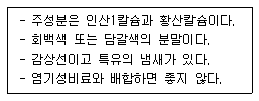
- 용성인비
- 질산칼슘
- 토머스인비
- 과린산석회
(정답률: 70%)
73. 수목관리에서는 잡초방제가 중요하다. 다음 중 잡초의 정의에 가장 적당한 것은?
- 수목의 성장에 방해되는 식물을 말한다.
- 수목의 관리에 방해되는 식물을 말한다.
- 계획에 의하여 식재되지 않은 식물을 말한다.
- 이용자가 원하지 않는 장소에 원하지 않는 식물이 생육하고 있을 것을 말한다.
(정답률: 66%)
74. 농약의 살포방법 중 유제, 수화제, 수용제 등에서 조제한 살포액을 분무기를 사용하여 무기분무(airless spray)에 의하여 안개모양으로 살포하는 방법은?
- 분무법(method of spray)
- 미스트법(mist spray method)
- 스프링클러법(sprinkler method)
- 폼스프레이법(foam spray method)
(정답률: 40%)
75. 조경관리 업무를 위탁(도급)방식으로 할 때의 장점에 해당하는 것은?
- 긴급한 대응이 가능하다.
- 관리실태가 정확히 파악된다.
- 임기응변적 조치가 가능하다.
- 관리비가 싸게 되고 정기적으로 안정할 수 있다.
(정답률: 67%)
76. 조경관리 중 시설구조 자체의 결함이나 시설 설치 및 배치의 미비에 의한 사고의 종류는?
- 자연재해 등에 의한 사고
- 관리하자에 의한 사고
- 설치하자에 의한 사고
- 이용자, 보호자의 부주의에 의한 사고
(정답률: 72%)
77. 용적밀도(bulk density)가 1.44g/cm3인 토양의 공극률이 0.4일 때, 이 토양의 입자비중(particle density)은 몇 g/cm3인가?
- 2.20
- 2.30
- 2.40
- 2.65
(정답률: 52%)
78. 멘트, 모르타르 뿜어붙이기에 앞서 철망을 비탈면에 잘 붙이고 철근앵커를 고정하는데 1m2당 몇 본을 표준으로 실시하는가?
- 1~2본
- 3~5본
- 5~10본
- 10~15본
(정답률: 50%)
79. 다음 중 재해의 발생 원인에 있어 인적원인에 해당하는 것은?
- 방호설비에 결함이 있었다.
- 작업자와의 연락이 불충분하였다.
- 작업장의 조명이 부적절하였다.
- 작업장 주위가 정리정돈 되어 있지 않았다.
(정답률: 74%)
80. 다음 중 솔잎혹파리에 관한 설명으로 틀린 것은?
- 매개충은 솔수염하늘소에 의해서 이동한다.
- 기생성 천적으로 솔잎혹파리먹좀벌, 혹파리등뿔먹좀벌 등이 있다.
- 벌레가 외부로 노출되는 시기가 극히 제한적이기 때문에 침투성 약제 나무주사가 가장 효율적인 방제법이다.
- 유충은 9월 하순~다음해 1월에 낙하(비오는 날이 가장 많음)하여 지피물 밑 또는 흙속으로 들어가 월동한다.
(정답률: 52%)